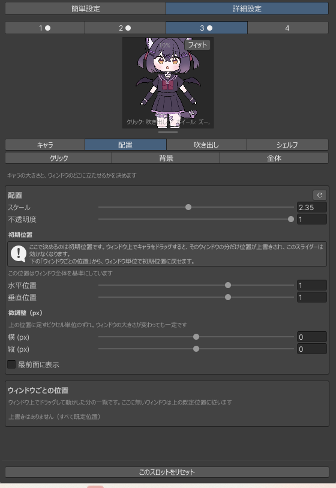

設定リファレンス
項目の意味を引くためのページです。手順として読みたい場合は プリセットを使うか自分の絵で作るへ。
画面の構造
上から順に、簡単設定／詳細設定の切り替え、スロット 1〜4、 プレビュー、そして中身です。詳細設定のときだけタブが2段（4つ＋3つ）出ます。
| スロット | 独立したキャラが4体。番号の横の「●」は中身が入っている印 |
| プレビュー | 実際の描画をそのまま映します。クリックで吹き出し、ホイールでズーム、中ボタンドラッグで移動、フィットで収め直し。ここではドラッグでキャラを動かせません（設定を映すものが設定を書き換えないため） |
| タブの記憶 | 最後に見ていたタブとモードが次回も開きます |
| 各セクションの ↺ | そのセクションだけを既定値に戻します |
| このスロットをリセット | 選んでいるスロットを丸ごと空にします |
簡単設定
プリセットを読み込んで置き場所を決めるまでの4セクション。
| キャラ | プリセットを適用...。.mamechara ファイルか保存済みプリセットを読み込む |
| 位置と大きさ | 初期位置（水平・垂直）、スケール、不透明度。ドラッグの上書きが残っているときは案内とリセットが出る |
| 吹き出しとクリック範囲 | キャラに対する吹き出しの位置と、クリック遮断範囲 |
| どのウィンドウに出す | ウィンドウごとの表示スロット。各行の ↺ でそのウィンドウの位置だけリセット |

キャラ
| プリセット | プリセットを適用...。他のスロットからコピー...は別スロットの設定と画像を複製（画像も複製されるので以後は独立） |
| キャラ画像 | 1枚目と2枚目（アニメ）。2枚設定すると交互に切り替わる |
| アニメーション | 切替速度（秒）、フェード、2枚目の位置を変更（水平・垂直オフセット） |
| クリック差分 | 吹き出し表示中に出す画像。設定するとアニメは止まる |
| プリセットとして保存 | 名前を付けて保存、または .mamechara にエクスポート。吹き出しを含める／背景を含めるで範囲を選ぶ |

配置
| 大きさ | スケール、不透明度 |
| 初期位置 | 水平・垂直（0〜1 がウィンドウの内側。外に出せば端からのぞかせられる）、ピクセル単位の微調整 |
| 手前に描く | ウィンドウのUIより前に出す |
| ウィンドウごとの位置 | ドラッグで動かした結果が残っている一覧。行ごとに消せる |
ここのスライダーはまだドラッグしていないウィンドウにしか効きません。 ウィンドウ上でキャラをドラッグすると、そのウィンドウの位置が個別に記録され、 以降はそちらが優先されます。
{kind=link}

吹き出し
キャラをクリックしたときに出るもの。画像でもテキストでも、両方でも作れます。
| 吹き出し画像 | 変更...／クリア／同梱の画像から選ぶ...。スケールと位置（キャラの矩形を基準） |
| 吹き出しのテキスト | クリック時のセリフ（1行にひとつ）、文字サイズ、文字色、余白 |
| 簡易ボックス | 吹き出し画像が無いときだけ出る項目。テキストの実サイズに合わせた箱を描く。幅と色を指定 |
| 自動表示 | 独り言の出す間隔とセリフ、コンパイル完了時／Play開始時／シーン保存時のオン・オフとセリフ、出しておく時間、順番をランダムにする |
セリフはクリック・独り言・コンパイル完了・Play開始・シーン保存で別に持ちます。 重なったときは クリック → イベント → 独り言。 クリックは割り込み、出ていた自動表示は打ち切られます。 クリックで開いているあいだ自動表示は始まりません。

シェルフ
吹き出しと一緒に出る4枠のアセット置き場。アセットをドラッグして置くとキャラが覚え、 そこから Scene へドラッグして戻せます。わすれるで消えます。
| アイコンサイズ | 1枠の大きさ |
| 水平位置・垂直位置 | キャラの矩形を基準にした位置（0〜1 が内側、外にも置ける） |

クリック
キャラの周りでクリックを受け止める四角。浮かせているウィンドウの下のUIに クリックが通らないようにするためのものです。
| クリック遮断範囲 | キャラを基準にした四角の大きさと位置 |
| 範囲を赤枠で表示する | 範囲を見ながら決めるための表示。この設定ウィンドウを開いているあいだだけ出る |

背景
MameChara 専用ウィンドウの背景。色・画像（タイル／伸ばす）・その両方を それぞれの不透明度で敷けます。
他のウィンドウに浮かせているときは背景を塗らないので、この設定は効きません。

全体
スロットに属さない設定。このタブだけスロットの選択が効きません。
| ウィンドウに浮かせる | Scene / Hierarchy / Inspector / Project / Console / Game それぞれに出すスロット、または表示しない。表示先をすべて解除で全部を「表示しない」に戻せる |
| 行末の ↺ | そのウィンドウでドラッグして動かした位置だけを消す。位置が残っている行にだけ出ます |
| MameChara を有効にする | 切ると設定を残したまま全ウィンドウで表示と背景を止める |
| Play中は隠す | 再生中は出さない |
| Unity が非アクティブのときアニメを止める | 他のアプリを使っているあいだ再描画しない |
| Language / 言語 | 日本語 / English |
| 設定の持ち出し | すべて書き出す...／読み込んで置き換える...（.mamecharaset） |

ファイルの置き場所
Assets/MameChara/ |
パッケージ本体。すべて Editor/ 以下なのでビルドには入りません。
更新するときは新しい .unitypackage を上からインポートします
|
ProjectSettings/MameChara/ | キャラの設定・画像・保存したプリセット。プロジェクトごとで、 インポータが触らないので更新しても消えません |
.mamechara |
プリセット1つ分の配布ファイル（ZIP。preset.json ＋ images/、
現行 formatVersion 4）
|
.mamecharaset | 4スロット分＋表示先＋全体オプションの持ち出しファイル。読み込むと全部置き換わります |